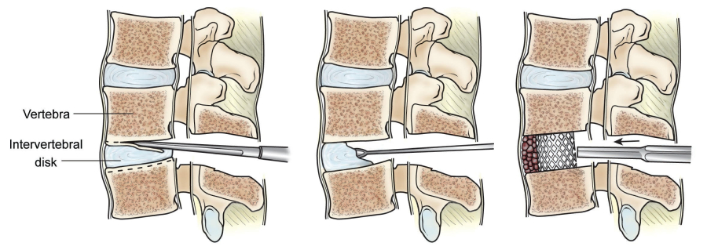

Холодноплазменна нуклеопластика — найбільш популярна процедура в Європі та США при болю в спині
Онлайн консультаціяВ Європі та США останні роки почали надавати перевагу малоінвазивним втручанням на хребті. Серед них найефективнішою є холодноплазменна нуклеопластика. Перш за все необхідна консультацію з фахівцем, можна записатися за номером телефону вказаним на титульній сторінці
Холодноплазменна нуклеопластика — це малоінвазивна операція, суть якої полягає в «випаровуванні» плазмою «зайвої» речовини диска. В результаті декомпресії диска, протрузія зникає, а разом з нею і всі симптоми захворювання. Хірург вводить в пошкоджений диск пункційну голку в електродом виключно під контролем рентгену, що гарантує безпечність процедури. Втручання не пов’язане з болем, не вимагає післяопераційної реабілітації, не має протипоказань за віком. Ускладнення практично не зустрічаються.
Полегшення, як правило, настає одразу ж після проведення процедури, але повне усунення всіх симптомів відбувається через два місяці після операції. Цей період необхідний для згасання пов’язаного з протрузією запального процесу, а також для відновлення пошкодженої нервової тканини.
Нуклеопластика — більше 25 років є найбільш популярної процедурою при протрузіях та грижах, в провідних клініках Європи та США. Перевагами даного методу є: не потребує загального наркозу (інтубації), тривалість близько 10-15 хвилин, процедуру можна віднести до амбулаторних (виписка відбувається в той самий день), відсутність ускладнень які можуть виникнути в результаті відкритої операції у більшості пацієнтів зменшення болю виникає навіть під час самої процедури Процедура проводиться як в шийному так і в поперековому відділі хребта